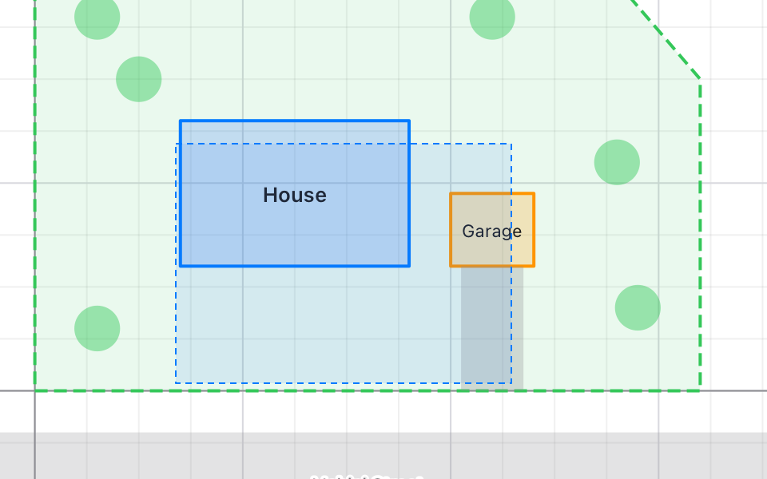

Zoom about the mouse, or into a box
The wheel and a pinch zoom about the point under the mouse, which stays where it is. Shift and a drag draws a box, and the view zooms smoothly until the box fills it. A double click fits the whole drawing again.
.onPointer { e in
let _used = vp.handle(e)
}